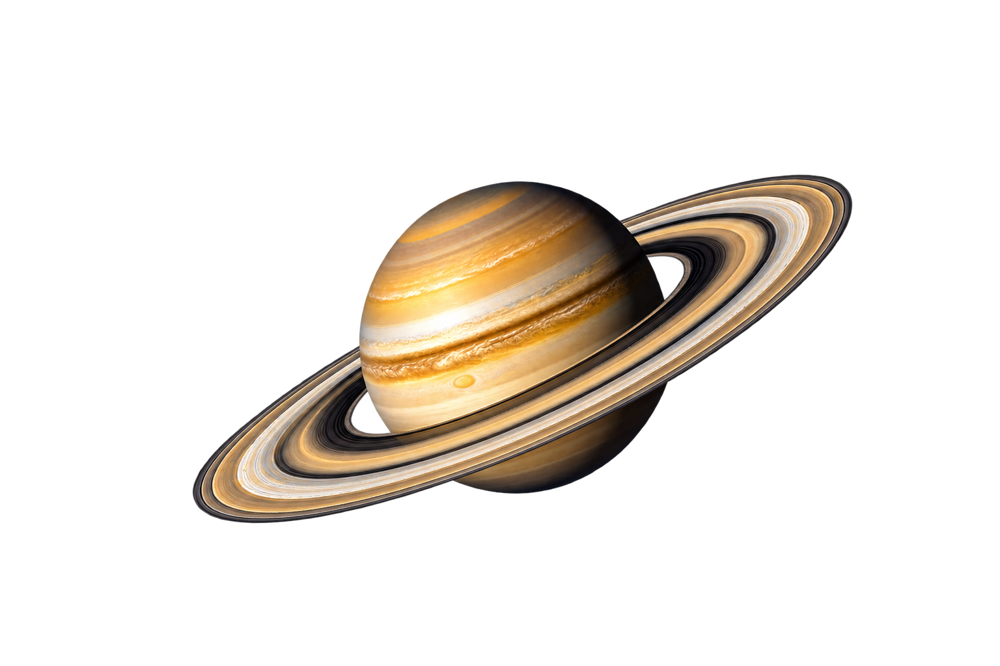

01
Saturno poderia flutuar em água porque sua densidade é menor que a da água.
O segundo maior planeta do Sistema Solar, famoso por seus anéis brilhantes e sua atmosfera gasosa dominada por hidrogênio e hélio.
← Voltar ao Sistema Solar
Saturno é conhecido pelos seus anéis espetaculares e pela grande quantidade de luas que o orbitam.
Compare a duração do dia em Saturno com outros planetas do Sistema Solar.
Saturno completa um dia em cerca de 11 horas, quase metade do tempo terrestre.
Os anéis de Saturno são compostos por gelo, poeira e rochas, criando um espetáculo único.
Seu interior é formado principalmente por hidrogênio e hélio, com ventos muito fortes.
Os anéis de Saturno são os mais visíveis e extensos do Sistema Solar.
Saturno tem mais de 80 luas conhecidas, incluindo Titã e Reia.
Saturno apresenta tempestades gigantes e ventos que podem passar de 1.800 km/h.
Saturno poderia flutuar em água porque sua densidade é menor que a da água.
Titã tem lagos de metano e etano na sua superfície.
Os anéis de Saturno podem ter apenas alguns milhões de anos.